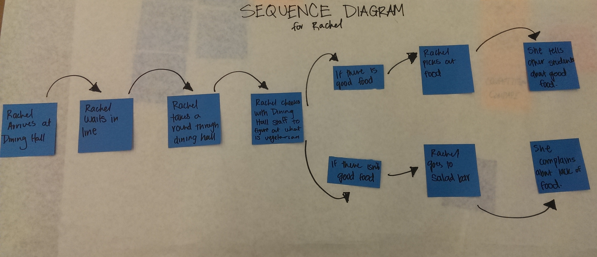
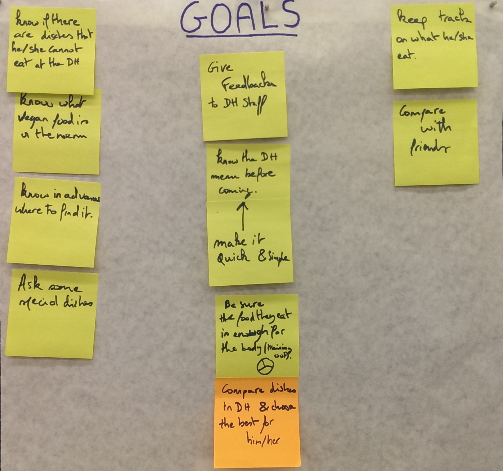
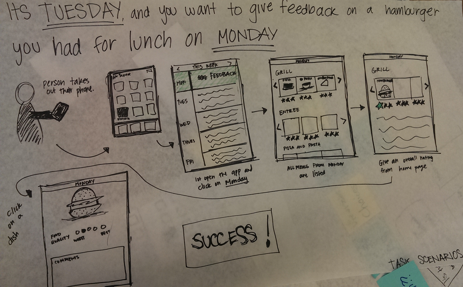
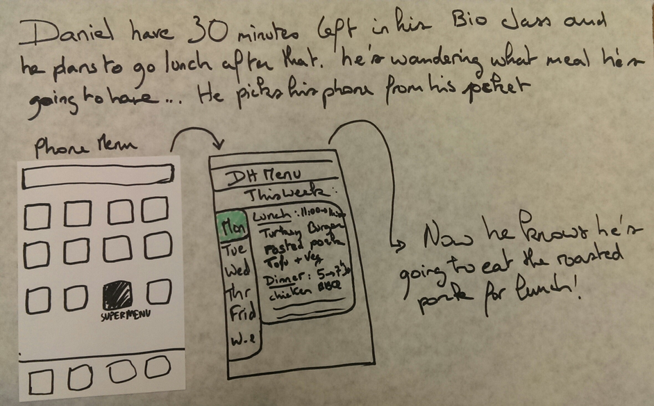

Project Brief
Our project addresses the dual issues that people who attend dining halls are unaware about the nutritional content and dining hall staff are often unaware what people like, want, and prefer. Our project will increase awareness for kitchen staff about what customers like and want. It will also help customers know the nutritional content in the food that they eat and enable them to easily improve their eating habits. Our project will improve nutritional awareness as users compare their eating habits with others’.
In gathering information for our project, we will collect dining hall menus and the nutritional content of the meals served. We will talk to dining hall employees and contracted companies to gather this data. We will also need to collect information about the nutritional content of other foods, like snacks the user may eat or drink. There are many databases online that provide this general information. We will start our data gathering at Olin and Babson Colleges; we will talk to students and the employees of the companies that run these Colleges’ dining halls. We will also speak to workers within these dining halls and visit other cafeterias in different settings to better gauge what will be needed for our project.
We will divide up tasks as necessary and according to our individual learning goals. We are all interested in learning interface design, so as we work on our project and determine tasks that need to be done we will divide them between us as interest dictates.
Attached is a few naive design ideas. The first idea addresses the problem of not being able to easily track and record the nutritional value of what you are eating in a dining hall. It does this by providing an easy way to quickly enter what you’ve eaten, and will automatically calculate the nutritional value for you. The second idea addresses the problem of an inefficient system of giving and receiving feedback to the dining hall staff. Our initial solution make it easy for the dining hall staff to understand what customers like and dislike.
Inspirational Designs
Dining Hall Apps - Alex
There are several schools and universities that have created apps that tell the students what they can eat that day; these apps are in the same space of what we may be looking to do.
Outside Restaurant Menus - Alex
Many restaurant post their menus outside of their establishment so that potential customers can look at decide whether they want to eat at the restaurant or not; this is a feature that dining halls tend to not have and we’ve heard a desire for this feature from interviewees.
Drive Thru Menus - Adit

One of the inspirational designs I had was fast food drive through menus. There are some key aspects of the design that could easily be useful in one of the ideas for our interface. Drive through menus are big, graphic displays of what food is available. Customers can easily see what food they want to eat. In addition, drive through menus give customers in a rush bigger things to see, while also including all the detail that is in the regular menu.
One of our ideas that this inspiration applies to is creating a menu display at the front of the dining hall that you see before you pay for the food. A big and graphic display could help tell people what is the dining hall before they go in, and give people something to look at while they are standing in line. However, if we include all the details of the regular menu, you can create confusion with too much information, and create congestion in the line if people try to read all the details.
Mall Maps - Adit

The big mall maps located in different parts of the mall are easy to understand, and give you a good understanding of what is located in the mall. This is something that dining halls could improve on, by giving students a good understanding of what is in the dining hall on any given day.
QR Codes - Alex
QR Codes are a quick, easy, and common way of spreading and posting information. We would like to use these as inspiration to create an interface dining hall customers can use and be satisfied with.
Picture Frames - Leo
Pictures frames are usually used at home to play your last vacation’s pictures but we could also use them in the dining hall by replacing the smalls cards that indicate the nutrition content of the dishes.
Boloco's iPad Style Ordering - Adit

Boloco has a tablet style ordering system, where you can customize your burrito at the front of the store. This tablet style system could work well for a feedback station located at the exits of the dining hall, so you can quickly give feedback on favorite dishes.
Survey Monkey - Adit
Survey monkey or online surveys in general make building and giving out surveys for feedback very easy. A similar survey system could be used to give the dining hall feedback.
Physical Restaurant Menus - Adit
When you are waiting to be seated at a restaurant, you can see the menu before being seated. In a dining hall with a long line, it could be useful to see the menu while waiting in line.
Foursquare - Adit
Foursquare has an location based notifications, which connects to one of our ideas which is to do notifications if your favorite foods are in the dining hall.
Online Restaurant Websites - Adit
Many restaurant chains have their menus posted online, which lets customers know what they can eat before they go to the restaurant. This could also be applied to dining halls, and give people prior notice as to what food they can expect for any meal.
Activity Trackers - Alex
Activity trackers keep track of a user’s daily amount of sleep and physical activity. This enables the user to know how healthy he or she is over a period of time, be it a day, weeks, or months. Knowing this data motivates a user to always do better and be healthier. The trackers themselves are very encouraging and often provide helpful tips on how to be healthier on a day to day basis.

The daily interface that tells the user how well they slept and how many steps they’ve taken every day is very helpful for someone who is concerned with their health. The app lets the user know how proactive they have been that day and how far they are from accomplishing their daily goal. This is a useful feature for someone who wishes to eat healthily each day; they can keep track of what food they eat and whether it is good for them.

The trends page of the app lets a user see their activity trends over time in days, weeks, or months. This is useful so that users can know what days of the week they are most active and when they get the best sleep. This is a feature we might want to implement for users who are interested in watching what they eat over a period of time. The scaling on this part of the app is inconsistent and flawed; it is be a feature we would need to improve.
d3js.org - Alex
This website provides many examples of how to represent data and a library with which to do so. This site could be an inspiration when we wish to find a way to represent data.
Pie Chart - Leo


We could use a pie chart to represent the nutrition content of a dish. This idea come from the pie graph we used in a survey; when there is a referendum we can see how much people in percentage of a population answer a specific question. A pie chart is divided into sectors, illustrating numerical proportion. In a pie chart, the arc length of each sector (and consequently its central angle and area), is proportional to the quantity it represents. It is a great way to represent ideas of a specific population. They are used in politics to represent for example the seats of congress in France.
Fire Hazard Signs at National Parks - Jianhan

National parks are required to frequently update the risk of fire happening each day at the entrance on a really large sign. Instead of fire, dining halls can do something similar for traffic within the dining hall for people who want to avoid crowds.
Pop-Up Notifications - Jianhan

Pop-up notifications are used on phones to alert people when something important comes up. Since favorite foods can be somewhat rare to show up in dining halls, alerting people advising them to go the dining hall for a certain meal because their favorite foods are on the menu would be helpful since they would not have to check the menu themselves. Users can input which foods they like themselves or choose from the list of foods that have been served before in the dining hall. Once the setup is done, an application would check the dining hall menus for them before meal times and then notify the users that their favorite foods are available.
Traffic Tracker (gMaps) - Jianhan
Google maps displays traffic information on different areas on roads to help people plan and choose the fastest way to get to a certain location. This could be applied to dining halls at the entrance and the various stations within so that people can check if the line is too long at any points where they want to go. People can choose to go to a dining hall later if the line at the entrance or their favorite station(s) is too long.
Signal Tower - Leo
One of our idea was to build a big tower signal that indicate if the Dining Hall is actually crowded or not. The inspirational design of this tower come from the traffic lights.
Coca Cola Multi-Flavor Machine - Jianhan
Instead of selecting flavors to dispense, there can be a screen interface that lets people control what food and/or how much they want to serve. It would be for foods that are already cooked so it would be serving food and have information.
Needs Analysis
The Problem
We started brainstorming issues that we could design an interface for to solve. We then arrived in the dining hall space based on personal interest and came up with a variety of potential issues. After talking to dining hall customers, we found several issues.
Our user research shows that, for many dining hall customers, knowing what food is in the dining hall beforehand is critical to that user’s decision to even eat at that location either due to dietary or monetary restrictions. Many customers are unable to eat certain types of foods, and when they do not know what is in the dining hall before making the decision and effort to enter, they have to resort to the same salad bar repeatedly.
Our user research shows that, for many dining hall customers, knowing what food is in the dining hall beforehand is critical to that user’s decision to even eat at that location either due to dietary or monetary restrictions. Many customers are unable to eat certain types of foods, and when they do not know what is in the dining hall before making the decision and effort to enter, they have to resort to the same salad bar repeatedly.
Labelling is also an issue for those with restrictions. The customers we reviewed complained that the signs currently in place have tiny font that makes it hard for them to see. Not only are the signs hard to see, they are sometimes out of place, making it potentially hazardous for customers with allergies to consume them. Customers we interviewed often showed an interest in knowing the nutritional value of what they were eating but were unable to due to the small and difficult to see cards. They also provide little information outside of food allergy ingredients.
Othertimes, there are monetary restrictions in how customers attend a dining hall. For example, Babson College offers two meal plans: unlimited or 10-meal weeks. For diners who are limited to 10 meals, knowing that the dining hall has quality and desirable food may affect whether these people elect to eat at that location or not. Unfortunately, it is often not easy for these students to know whether or not there is appealing food available, and they may waste one of their meals only to discover they, also, must resort to the salad bar.
Other users are interested in eating healthy and have difficulty finding healthy options in the dining hall. These users need to be able to know what food is going to be in the dining hall for similar reasons as to those who have dietary restrictions.
Most customers also do not give feedback to dining hall staff. Comment cards are located in inconvenient locations away from where they go after eating their food. Some are also afraid of talking to the dining hall staff, thinking that they are scary.
Dining hall staff face the issue of general negative feedback when they receive them, such as,”The food sucks.” It is uninformative and they do not believe that it can apply to everything. Since they serve the masses, it is more difficult for them to make serving food as easy for small minorities. They are also busy, so individual issues are less of a priority than those that affect a lot of customers.
We are proposing to the solve the problem of getting quality, consumable food available for customers to eat at college/university dining halls.
Who Matters?
On Campus Students: They pay for the food and have an impact on how the overall college is perceived based on their experience. If they are not satisfied, they could move off campus, lowering activity within the college campus or worse, sue the dining hall for issues that can come up. They think that it is frustrating when they do not have consumable food available to them and disappointing when the consumable food is not good.
Dining Hall Staff: Their interactions with customers affect their morale and how they prepare and serve food. If their customers are happy with the food, it is evident compared to customers who do not like the food. They think that there is always consumable food available, but customers may have to put in some effort toward getting them. For comment cards, they dislike general negative comments such as, “The food sucks,” and want specific information for constructive feedback so they know how to improve in the future.
Solving the Problem
To address the problems we discovered we need break them down and analyze what we would require to formulate a solution.
The first problem we could address is the inaccessibility of the dining hall menu. We would need to ensure that the user has easy access to the dining hall menu before taking the time and effort to go to the dining hall. We know from research that there is a menu website, but talking to users has shown that no one takes the time to use it if they even know it exists. A viable solution to this problem is making the menu’s barrier of use significantly lower.
Our solution would ideally also address the issue of inefficient and inaccurate food labelling. Meals in the dining hall are often labelled with small and difficult to see labels and we received several comments from our interviewees that they would prefer easily knowing what they are eating. We also have anecdotal evidence that it is not uncommon for the foods to be blatantly mislabeled. This problem is closely related to letting people with dietary restrictions know what is available for them to eat. To resolve both problems we would need to make food information easily accessible and accurate.
One of our most prominent complaints was the lack of and easily accessible way of providing feedback to the dining hall staff. We would need to design an easy to use feedback interface with a low barrier of effort to resolve this problem.
Besides solving the needs of customers, the dining hall staff would receive more clear feedback from the customers about the food that they produce. This would enable them to easily make changes to improve the dining hall experience which may, in itself, resolve other dining hall issues.
Anecdotal Evidence
Joe, one of the students we interviewed, talked about an experience he had with mislabeled food. One day, in the dining hall, he decided to get some soup. Unfortunately, the vegetarian and non-vegetarian soups were mislabeled. Joe accidentally took the non-vegetarian soup, thinking there was no meat in it. Only after taking a sip of the soup did he realize that he just ate meat. As a vegetarian, he was angry at the situation. He went and complained to the dining hall, but regularly noticed the problem of mislabeled food from then on. Now, Joe always asks various dining hall staff whether a dish is vegetarian, and doesn’t trust the dish labels. Joe’s story exhibits the issues in the dining hall labeling system.
Another student we talked to, Rick, recounted an experience when he found a piece of plastic in his soup. When he found a piece of plastic in his soup, he didn’t really know who to tell. He ended up walking into the dining hall and found someone leaving the dishwashing room. He then told the staff member about the plastic. At first the staff member was disbelieving, but after she saw the plastic, she just said “Okay” and took the plastic and walked off. Rick went back to his soup, unsure whether more plastic would be found. He also was not sure what the dining hall did with the information. For all he knew, the staff member just threw away the plastic and her boss never found out about it. This situation highlights the need for a system to give feedback to the dining hall. As it is currently, the system relies on comment cards and word of mouth, both of which can be slow and ineffective in inducing change.
Design Artifacts
Personas:
Through our user interviews and contextual interviews, we found two main personas within the students. One was the person who generally tried to eat healthy and stay in shape. The other was person with some sort of health restriction, which made them have different interactions with the dining hall. Below you can get a better sense of our personas. Creating these personas helped us understand what our problems our users had.
Concerned Christy

Christy is sophomore at a medium size university in Massachusetts. She studies accountancy and is majoring in operations management. She likes to plan things and loves what she does. She is a quiet person and usually goes to eat with the same group of friends. They have favorite hours and a favorite table and you can often find her in the dining hall at noon and at 6:30 during the evening. Christy tries hard to eat healthy and has no dietary restrictions. She sometimes eats noodles or rice before her soccer games or tennis training. She tries to read the nutrition cards in the dining hall but she only does it when its not busy in the dining hall. She is a bit shy and not really talkative. She doesn’t personally know the dining hall employees and never gives feedback about what she eats but has many ideas to contribute.
Values: Fitness, Simplicity, Healthy Eating, Choice
Needs: Track what she is eating, healthy options, knowing she is eating healthy
Restricted Rachel
Rachel is a junior is a big university and enjoys the student social life. She is the head of the cheerleading quad this year, and also enjoys poetry and hiking. She has been a vegetarian since freshman year in high school, and in concerned by the lack of vegetarian food in the dining hall. She sometimes brings it up with various dining hall staff members. She sometimes stuggles to make sure she gets all the nutrition she needs from the available meals in the dining hall.
Values: Convienince, Information, Knowledge, Simplicity, Choice
Needs: Know whats in the food, share opinion, know there is consumable food
Sequence Diagram:
The sequence diagram shows how Rachel might go through the dining hall at any given day. The path has two different end points depending on Rachel's opinion of the choices available. This design framework shows a number of pain points that we want to address with our interface.
User Goals
The user goals for the two personas are shown in the design framework above. The left column is goals for Restricted Rachel and the right column is goals for Concerned Christy. The middle shows shared goals. Looking at our users goals also helped us forumulate our problem, by clearly identifying what our users want to do in the dining hall.
Task Scenarios

